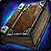

Memento of Tyrande
Memento of TyrandeMemento of Tyrande37 spell damage, 118 healing powerProc, 10% chance, 50 sec internal cooldown. Wisdom: 76 mana per 5 for 15 secDrops from Illidan Stormrage, Black Temple
37 spell damage, 118 healing power
Proc, 10% chance, 50 sec internal cooldown. Wisdom: 76 mana per 5 for 15
sec
Drops from Illidan Stormrage, Black Temple
What influencers say
Joardee
Joardee · 139:14
23k views
Puts it on Holy Paladin
Joardee says the trinket is not great and is one of the lowest upgrades
of the tier despite looking impressive, with holy paladin the only class
he thinks clearly uses it, and expects drama over it anyway.
Showing all 4 spec cards.
No specs are selected, so no cards are showing. Use Show every spec to bring all of them back.
Holy Paladin
Prioritynot yet decided
Constraints
No hit cap applies to this spec.
No crit cap.
Global cooldown floor at 50% spell haste, which nothing rostered reaches
from gear this phase.
Delta
Memento of TyrandeMemento of Tyrande37 spell damage, 118 healing powerProc, 10% chance, 50 sec internal cooldown.
Wisdom: 76 mana per 5 for 15 secDrops from Illidan Stormrage, Black
Temple in Holy Paladin
terms EPV 130.38
| Stat | Over best Phase 3 off-piece Direbrew HopsDirebrew Hops28 spell damage, 84 healing powerOn use. Hopped Up: 297 healing power, 99 spell damage for 20 sec EPV 133.50 | Over best pre-phase off-piece, Badge of Justice Essence of the MartyrEssence of the Martyr28 spell damage, 84 healing powerOn use. Essence of the Martyr: 297 healing power, 99 spell damage for 20 sec EPV 133.50 | Over next best off-piece, Black Morass Scarab of the Infinite CycleScarab of the Infinite Cycle24 spell damage, 70 healing powerProc, 10% chance, 45 sec internal cooldown. Spell Haste: 320 spell haste rating for 6 sec EPV 118.00 | Over next best off-piece, Tempest Keep Tome of Fiery RedemptionTome of Fiery RedemptionProc, 15% chance, 45 sec internal cooldown. Blessing of Righteousness: 290 healing power, 290 spell damage for 15 secDrops from Al'ar, Tempest Keep EPV 96.67 | ||||
|---|---|---|---|---|---|---|---|---|
| Change | Converted | Change | Converted | Change | Converted | Change | Converted | |
| spell damage | +9 | +9 | +13 | +37 | ||||
| healing power | +34 | +34 | +48 | +118 | ||||
| Stat Highlights (Total Change) | +9 spell damage +34 healing power | +9 spell damage +34 healing power | +13 spell damage +48 healing power | +37 spell damage +118 healing power | ||||
No Tier 6 and no Tier 5 is ranked for this spec in this slot, so that
comparison is not shown. A weapon the workbook does not rank cannot be
compared against, and a spec with no captured gear set has nothing
recorded to carry in.
Rates
Restoration Shaman
Prioritynot yet decided
Constraints
No hit cap applies to this spec.
No crit cap.
Global cooldown floor at 50% spell haste, which nothing rostered reaches
from gear this phase.
Delta
Memento of TyrandeMemento of Tyrande37 spell damage, 118 healing powerProc, 10% chance, 50 sec internal cooldown.
Wisdom: 76 mana per 5 for 15 secDrops from Illidan Stormrage, Black
Temple in Restoration
Shaman terms EPV
142.75
| Stat | Over best Phase 3 off-piece Direbrew HopsDirebrew Hops28 spell damage, 84 healing powerOn use. Hopped Up: 297 healing power, 99 spell damage for 20 sec EPV 133.50 | Over best pre-phase off-piece, Badge of Justice Essence of the MartyrEssence of the Martyr28 spell damage, 84 healing powerOn use. Essence of the Martyr: 297 healing power, 99 spell damage for 20 sec EPV 133.50 | Over next best off-piece, Black Morass Scarab of the Infinite CycleScarab of the Infinite Cycle24 spell damage, 70 healing powerProc, 10% chance, 45 sec internal cooldown. Spell Haste: 320 spell haste rating for 6 sec EPV 129.40 | Over next best off-piece, Gruul's Lair Eye of GruulEye of Gruul15 spell damage, 44 healing powerProc, 2% chance. An effect the item database does not name, buff 37705Drops from Gruul the Dragonkiller, Gruul's Lair EPV 119.00 | ||||
|---|---|---|---|---|---|---|---|---|
| Change | Converted | Change | Converted | Change | Converted | Change | Converted | |
| spell damage | +9 | +9 | +13 | +22 | ||||
| healing power | +34 | +34 | +48 | +74 | ||||
| Stat Highlights (Total Change) | +9 spell damage +34 healing power | +9 spell damage +34 healing power | +13 spell damage +48 healing power | +22 spell damage +74 healing power | ||||
No Tier 6 and no Tier 5 is ranked for this spec in this slot, so that
comparison is not shown. A weapon the workbook does not rank cannot be
compared against, and a spec with no captured gear set has nothing
recorded to carry in.
Rates
Restoration Druid
Prioritynot yet decided
Constraints
No hit cap applies to this spec.
No crit cap.
Part of this spec's damage is periodic, and periodic damage cannot crit
in this patch, so crit reaches less of its output than the character
sheet suggests.
Global cooldown floor at 50% spell haste, which nothing rostered reaches
from gear this phase.
Delta
Memento of TyrandeMemento of Tyrande37 spell damage, 118 healing powerProc, 10% chance, 50 sec internal cooldown.
Wisdom: 76 mana per 5 for 15 secDrops from Illidan Stormrage, Black
Temple in Restoration
Druid terms EPV
126.25
| Stat | Over best Phase 3 off-piece Direbrew HopsDirebrew Hops28 spell damage, 84 healing powerOn use. Hopped Up: 297 healing power, 99 spell damage for 20 sec EPV 133.50 | Over best pre-phase off-piece, Badge of Justice Essence of the MartyrEssence of the Martyr28 spell damage, 84 healing powerOn use. Essence of the Martyr: 297 healing power, 99 spell damage for 20 sec EPV 133.50 | Over next best off-piece, Nagrand Oshu'gun RelicOshu'gun Relic18 spell damage, 53 healing powerOn use. Power of Prayer: 213 healing power, 71 spell damage for 20 sec EPV 88.50 | Over next best off-piece, Lower
City
 Lower City PrayerbookLower City Prayerbook24 spell damage, 70 healing powerOn use. Blessing of Faith EPV 75.50 |
||||
|---|---|---|---|---|---|---|---|---|
| Change | Converted | Change | Converted | Change | Converted | Change | Converted | |
| spell damage | +9 | +9 | +19 | +13 | ||||
| healing power | +34 | +34 | +65 | +48 | ||||
| Stat Highlights (Total Change) | +9 spell damage +34 healing power | +9 spell damage +34 healing power | +19 spell damage +65 healing power | +13 spell damage +48 healing power | ||||
No Tier 6 and no Tier 5 is ranked for this spec in this slot, so that
comparison is not shown. A weapon the workbook does not rank cannot be
compared against, and a spec with no captured gear set has nothing
recorded to carry in.
Rates
Priest Healer
Prioritynot yet decided
Constraints
No hit cap applies to this spec.
No crit cap.
Global cooldown floor at 50% spell haste, which nothing rostered reaches
from gear this phase.
Delta
Memento of TyrandeMemento of Tyrande37 spell damage, 118 healing powerProc, 10% chance, 50 sec internal cooldown.
Wisdom: 76 mana per 5 for 15 secDrops from Illidan Stormrage, Black
Temple in Priest Healer
terms EPV 161.02
| Stat | Over best pre-phase off-piece, Gruul's Lair Eye of GruulEye of Gruul15 spell damage, 44 healing powerProc, 2% chance. An effect the item database does not name, buff 37705Drops from Gruul the Dragonkiller, Gruul's Lair EPV 174.35 | Over next best off-piece, Serpentshrine Cavern Earring of Soulful MeditationEarring of Soulful Meditation22 spell damage, 66 healing powerOn use. Deep Meditation: 300 spirit for 20 secDrops from The Lurker Below, Serpentshrine Cavern EPV 156.85 | Over next best off-piece, Botanica Bangle of Endless BlessingsBangle of Endless BlessingsProc, 10% chance, 50 sec internal cooldown. Meditation for 15 sec · On use. Endless Blessings: 130 spirit for 20 sec EPV 139.04 | Over best Phase 3 off-piece Direbrew HopsDirebrew Hops28 spell damage, 84 healing powerOn use. Hopped Up: 297 healing power, 99 spell damage for 20 sec EPV 133.50 | ||||
|---|---|---|---|---|---|---|---|---|
| Change | Converted | Change | Converted | Change | Converted | Change | Converted | |
| spell damage | +22 | +15 | +37 | +9 | ||||
| healing power | +74 | +52 | +118 | +34 | ||||
| Stat Highlights (Total Change) | +22 spell damage +74 healing power | +15 spell damage +52 healing power | +37 spell damage +118 healing power | +9 spell damage +34 healing power | ||||
No Tier 6 and no Tier 5 is ranked for this spec in this slot, so that
comparison is not shown. A weapon the workbook does not rank cannot be
compared against, and a spec with no captured gear set has nothing
recorded to carry in.
Rates